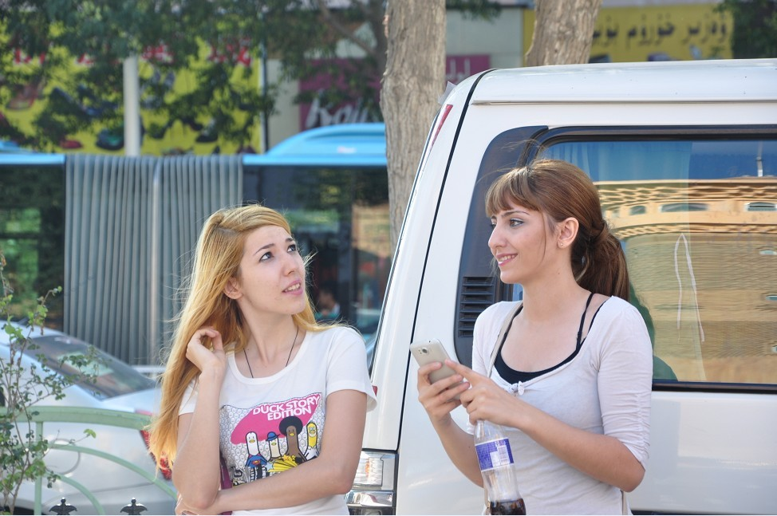
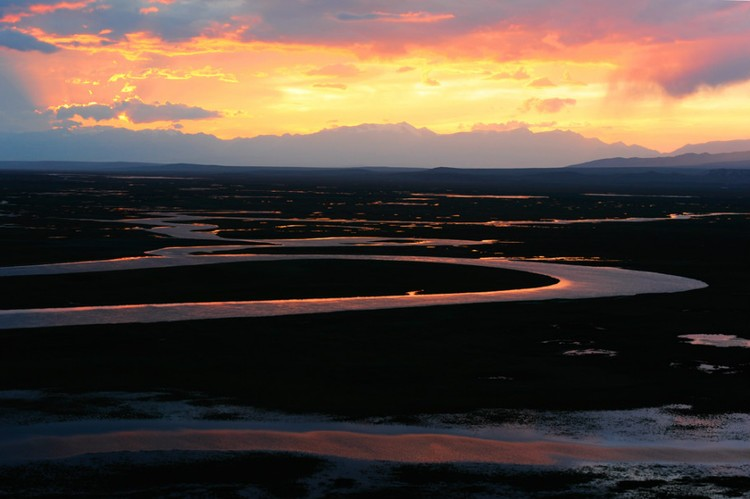
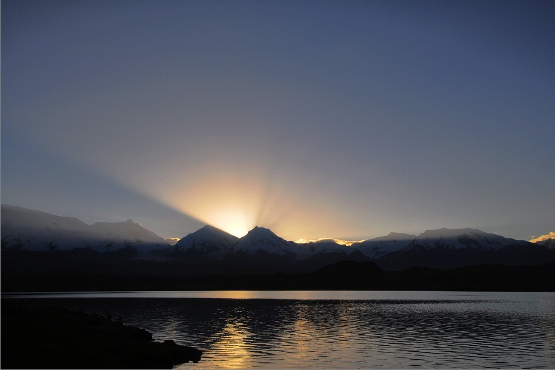
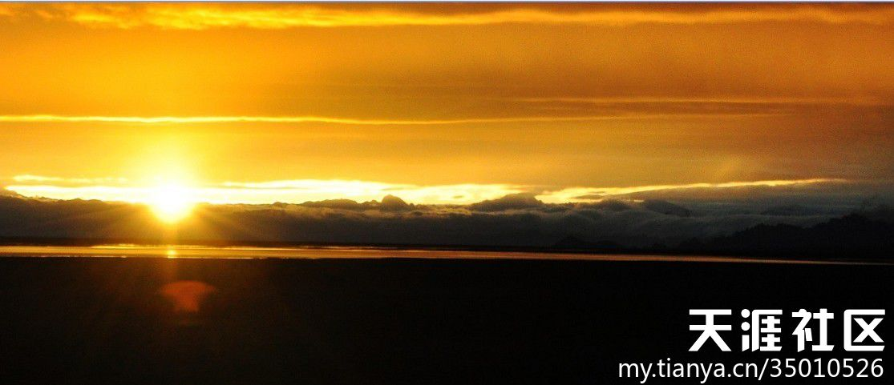

发信人: yahuo (牙火虫), 信区: outdoor
标 题: 抛家弃子浪新疆——南北疆及罗布泊阿尔金山游记
发信站: 饮水思源 (2012年09月29日00:24:26 星期六)
因为在bbs上发图很不方便，中途转战天涯 。游记已写了15页了，目前正在写罗布泊。我
敢说，大部分童鞋很难看到我发的照片中的那绝美的景色。下面天涯的链接和我摘录的一
部分游记和图片。
天涯 链接：
http://www.tianya.cn/publicforum/content/travel/1/434703.shtml
如觉得前面比较平淡，可从第七页后半部分开始浏览。
screen.width - 200){this.width = screen.width - 200}">
2012年8月7日，中央驴团以血肉之躯谱写了人类历史上无与伦比的英雄史诗，在8月6
日穿越阿尔金山的卡尔顿大草原未果后，果断返回大沙河扎营。并于第二天中午一点再次
抵达仙境般的沙子泉。
因贪恋哪儿的美色，以大海螺为首的色友们，当即决定发扬死皮赖脸的光荣传统，就
地扎营。中央驴团那传奇式的风采、坚韧不拔的将吃喝玩乐进行到底的革命英雄主义精神
、始终是中国人民学习的榜样。是中国革命和建设赖以成功的基础,它将激励着一个有13亿
人口的中国朝着一个无人能够预言的未来前进。中央驴团的阿尔金山之长征是举世无双的
壮举,它像一条永远铭刻在地球上的红飘带,成为人类坚定无畏、无赖、无耻的象征.
游记：
去新疆，荡涤自己的灵魂，风干自己发霉的心事，一直是我不灭的梦想！远甚于西藏。
死党说我说过最浪漫的话就是死在流浪新疆的旅途中。但我由于天性散漫随性和拖拖拉拉
，一直没做计划，一切尽停留在梦想阶段。这次恰巧看到磨坊有驴友在召集穿越阿尔金山
和罗布泊。无疑，像我这种爱做梦爱旅行向往蓝天渴望自由的灵魂，都有一个很浓的楼兰
情节，幻想到楼兰古城去完成一次时光穿越，披星戴月地做一回我最美的楼兰新娘。都希
望到罗布泊去祭拜一下余纯顺和彭加木等“革命先烈”们。还犹豫什么呢，果断报名。
我素来都很随性，即时决定，即时出发。经常，突然哪天想起要出门，心潮澎湃，一
刻也闲不住。然后，必然是没有准备的，必然是没有目的地和方向的，必然是兴奋莫名的
，不出去就有被窒息的感觉。不顾一切，出走！
有时，甚至，我会上春秋漫无目的地闲逛，看机票，发现哪儿便宜，正好感兴趣，买
一张。背上背囊，出发！
我讨厌计划，讨厌规划，讨厌攻略。喜欢随时可以改变，随处有惊喜的旅程，喜欢这
种无拘无束一个人行走的方式。
然而，我没有方向感，在熟悉的城市，也会经常迷路。
然而，迷路归迷路，我依然喜欢旅行，依然不喜欢结伴。因为没有目的地，也就无所
谓方向，无所谓迷路。家在背上，路在脚下。走到哪算哪，哈尔有他的移动城堡，我有我
流动的家园。
行走，注定要成为我生活的一种方式。
然而，这种方式注定也是随机随性而发的，跟死党订机票时，她很意外也不意外，只
是惊诧于我瞬间的决绝。
匆忙订好机票，陪死党购置装备。临行前，因为大意，开着空调没穿衣服收拾行李外
加拷音乐，严重感冒，这感冒一直赖着不走，跟随我半个多月，大有对我从一而终的比我
更决绝更刚烈的想法。还好我一狠心，一跺脚，一咬牙，把她赶跑了。
春秋航空经常晚点，这次也不例外，照例晚点两个多小时起飞，中间还莫名其妙经停
银川。并且，还限制行李，害我补交了200多大洋，肉疼ing。。。但某些人真是无可救药
，如同我，在同等价位的前提下，我还是会一如既往愚蠢地支持民营春秋，反对垄断。不
过，偶觉得这点小执拗很可爱呢。
D1、落地乌市后被朋友接到昌吉，因为是在取行李时才临时决定通知的，在朋友盛情
款待我们到当地的农家乐秋风扫落叶般胡吃海喝一通后却没法为我们寻到住处。只好再杀
回乌市。到乌市后先到磨坊驴友推荐的红山的百时快捷酒店，无房。后辗转找到格林豪泰
，鸟窝般大小房间，设施简陋，会员价还要200多，条件很差，跟概念中的格林豪泰没得比
。
D2、第二天一早打电话预订百事快捷酒店，也要200多，结果还是很差，但是在懒得找
了，凑合住下。次日搬到红山的麦田青旅，单间150，感觉简直是天堂。定了麦田青旅后，
到下面的一家手抓饭慰劳自己，配着酸奶，和小碟开胃菜，很赞。出门买了点杏，很甜，
味道十足，才4元一斤。完了去大巴扎，惊见美女帅哥无数，真想抗几麻袋回来。买干果无
数（事后发现被宰）先上几盘美女帅哥给你们解解馋
最喜欢的就是她的眼神，温和，宽容，仁慈，愿生命的尽头 也有这样的眼神 等着我们去
朝圣
screen.width - 200){this.width = screen.width - 200}">
阳光灿烂的日子
 screen.width - 200){this.width = screen.width - 200}">
10米一个特警，特警们都超帅，但我不敢多拍，D90的18-105的套头也不是很给力
screen.width - 200){this.width = screen.width - 200}">
大巴扎对面的小吃街。因为道听途说的种族冲突，你不知道初到新疆的我有多老实，
和善，眼睛所到之处，那个温和啊。我对着老人笑，对着孩子笑，对着彪悍的爷们笑，对
着窈窕的美女笑，，甚至对着一条狗，对着垃圾桶都在笑。普天下的水都在我眼里荡开。
一辈子没这么温柔过。
screen.width - 200){this.width = screen.width - 200}">
朋友请我在昌吉的农家乐吃的我最最爱的囊披萨，要是可能，我会考虑在下巴下面开一道
口子，狂吃一卡车
screen.width - 200){this.width = screen.width - 200}">
D3、第三天看看磨坊的驴友们还没到齐，得闲去吐鲁番，交河故城，一路都是寸草不
生的戈壁荒原，触目惊心。我愿想化身千亿，去点缀一下这篇贫瘠的土地
screen.width - 200){this.width = screen.width - 200}">
去吐鲁番的路上，我和死党。看，圆圆，好大一扎灰机
screen.width - 200){this.width = screen.width - 200}">
有没有闻到阳光的气味？
screen.width - 200){this.width = screen.width - 200}">
车上随手拍的
screen.width - 200){this.width = screen.width - 200}">
交河故城，yy一下，玩回穿越，想象着她昔时的繁华，车水马龙。想象自己梦回唐朝
，仿若一位白衣胜雪的仙子，翩然而至，不着痕迹。
screen.width - 200){this.width = screen.width - 200}">
交河故城难得一见的绿洲
screen.width - 200){this.width = screen.width - 200}">
有没有想纵身一跳立时飞仙的冲动呢？
screen.width - 200){this.width = screen.width - 200}">
如火的夕阳，自顾自地燃烧着他最后的温暖
screen.width - 200){this.width = screen.width - 200}">
天光云影共徘徊
screen.width - 200){this.width = screen.width - 200}">
羊羊们喝着最甘冽的清泉，吃着无污染的青草，谈情说爱，生儿育女，诉说着不老的传说
。而我们，只能短暂停留，匆匆而来，急急而去，带不走一丝云彩，除了我们做不完的清
梦
screen.width - 200){this.width = screen.width - 200}">
D5、看完赛里木湖的日出后我们驱车前往伊宁的薰衣草基地，不无意外的，花期已过
。我有点小小的完美主义，所以，不愿举起相机，没有照片。但既来之则安之且乐之吧。
我们去农户家买薰衣草干花和精油。买精油和干花时感觉被坑。建议到霍尔格斯口岸集市
买，自行砍价。
没了薰衣草鲜花怒放的伊宁，实在不值一留，我们直杀昭苏。八卦城去昭苏的路上，
到处都是怒放的油菜花海。入住昭苏后，旅馆老板推荐我们去金花瀑布，说是很漂亮，像
瀑布一样额油菜花，距离昭苏市10公里左右，位于萨尔阔布乡的三公社。在我的坚持下，
同行驴友们勉为其难地答应去找金花瀑布，未果。但一路上都是一眼望不到边的怒放的油
菜花，一直从地上铺到天上，天尽头，尽头的尽头，还是这浩瀚的油菜花海。许是审美疲
劳，驴友们对花海并不感冒，甚至都没有停车拍照，可我却喜欢至极！回去的路上一直耿
耿于怀没有让我到那花海中去撒撒野。于是，回酒店后又独自包车前往，只为去那油菜花
海中发发呆，做做梦，可能的话，哭一场。
我认为这就是金花瀑布，只是我拍不出那仿佛从天边倾泻而下的瀑布般的油菜花的效果来
screen.width - 200){this.width = screen.width - 200}">
万亩油菜花海，看上去壮阔，其实没有去金花瀑布路上看到的那么震撼。金花瀑布的油菜
花，那真叫花海，大海般望不到边。
screen.width - 200){this.width = screen.width - 200}">
我喜欢这样的麦田，也喜欢这样的侠女
screen.width - 200){this.width = screen.width - 200}">
从金花瀑布回昭苏有两条路，司机问我怎么回，我不假思索，轻描淡写地说：不走回
头路。哈，够霸气吧。就是这一豪气干云，多了两百公里（个人感觉，不知是否有误，懒
得管）。总之，包车环游了两个大草原。记得有个好像叫巴拉克苏草原还是啥的,一个人包
车的感觉真好，随叫随停，思想有多远，灵魂就能跑多远。草原的夜，那么静，那么美，
那么好，只差我最喜欢的马头琴音了。美得让人落泪。我爱这样静谧的夜晚，爱这天空中
的繁星点点，风声嗖嗖。
幸福之家
screen.width - 200){this.width = screen.width - 200}">
牧人，花海，彩虹，如梦如幻
screen.width - 200){this.width = screen.width - 200}">
散养的羊群，看不到牧民
screen.width - 200){this.width = screen.width - 200}">
UFO?
screen.width - 200){this.width = screen.width - 200}">
这次小小的包车夜游两大草原事故，掀起了不小的波澜。
虽然事先跟领队沟通过，领队也同意了，但包括我自己在内的所有驴友，都压根也没
料到我会折腾到快零点才回酒店。我承认，我有点喜欢钻空子，拿着鸡毛当令箭。只因之
前副领队mm苏说过“每晚八点吃晚饭饭，如果有喜欢拍照的朋友可以自行安排。”所以，
我就理直气壮包车畅游。结果害得大家伙儿饭都没吃好，一直为我担心，直到我回到酒店
。
虽然，我的车是酒店老板帮忙找的，虽然，我也一路上跟大家积极保持微信联系，虽
然，实际上如前面所说，到新疆后的我分外友善，温和。但这丝毫不能改变同行驴友d对我
的安全问题的担忧。事实上，我一路上没少添乱子，让大家操心，嘻嘻。
事前，我并不觉得这有啥大不了，我一直认为，在没有大的种族利益冲突的前提下，
只要你不冒犯别人，没有人想要故意伤害你，为难你。事后云MM跟我说起我才知道，人与
人是不一样的，有些人生来就行事小心，谨言慎行。不是人人都如我这般胆大妄为，自由
散漫，特立独行。
我觉得，有必要说一下我的现状和价值观：我是一个没啥上进心，没有赚钱欲望，知
足常乐的阿Q式女人。
我的一些想法和理念跟当下的中国社会有点背道而驰，不被认同，当然，我也很不认
同他们。有时，感觉自己仿佛飘在云端，淡淡地看着芸芸众生忙忙碌碌，追逐那些对我来
说毫无意义的功名利禄。
我没房没车也几乎没存款，朋友们劝我攒钱买房，我会反驳“我又不是没房住，我比
一般人住的宽敞舒适。”朋友劝我买车，我更是理直气壮“徒步和骑自行车多好啊，还免
去了去健身房的费用，免去了医疗费用，强身健体，绿色环保。远一点我可以乘坐地铁，
高峰时间，我几乎是从不出门的，多数时候，差不多等于享受专列。不方便时我可以打的
，还有专门的可以任我随意指挥的司机，不用自己驾驶。饲养一辆车，在上海，每年总得
上万吧。我打车的费用封顶2000，余下的钱，可以下馆子，看电影，买衣服，作短途旅行
。这么说吧，我至少比身家是我十倍的人吃得好，穿得好，玩得好。”朋友无语！
这些年来，目睹着身边的，周围的人把那些名啊，利啊，光环啊，一件一件往身上套
，光看着，都觉得累！我是边走边脱，去掉了许多浮华和虚荣的东西，一步一步往回活，
希望做回孩子的模样，像孩子一样的简单、平静、纯真、快乐。
人生如白驹过隙。一辈子实在是太短暂，短的得来不及说一句话，听一首歌就完蛋了
。那些名啊，利啊，所有的光环，都是身外之物，都是做给别人看的。在这个浮躁的社会
，大家都步履匆忙，行色匆匆，很少有人会停下来，关注自己的内心，等等自己的灵魂，
问问自己到底想要什么。每个人都憋着一股子劲，永不满足。往往是忙忙碌碌，狗苟蝇营
一辈子，到头来却是万般带不去，懊悔含恨而终。
正如一位朋友所说，很多人的一生，就像一匹不知疲倦，一路往前奔跑的骏马。它只
知道往前奔，却不知为何而奔，当然，它更不会去欣赏沿途的美景，体会奔跑的意义。而
我，就像一头小母牛，忙时耕耕地，累了停下来喝口水，还忙里偷闲地吃几口路边的野草
。闲时，去水塘洗个澡，去山坡上吹吹风，晚上再反刍反刍，品位一下野草的芬芳与甘甜
。我知道，人们只欣赏英俊潇洒的骏马，而对我这样的小母牛都是视若无睹的。不过，那
又怎样，我不在乎，我要努力做到不管世俗的意见，完全接受心灵的召唤，做自己喜欢做
的事情。
徒步夏特时，天气并不好，但漫山遍野怒放的鲜花给了我们意外的惊喜，整个徒步过程，
就是徜徉花海的过程
screen.width - 200){this.width = screen.width - 200}">
披着晚霞的九曲十八弯，像不像一位盛装的新娘？当然，不是穿白色婚纱的现代新娘，而
是头戴凤冠，身着霞帔的古典新娘。那漫天的嫣红，是不是有一点新娘不胜酒力的娇羞？
那一襟晚照，像不像一抹红晕漫过她动人的脸盘？那盈盈的波光，像不像娇娘脉脉含情的
眼波荡漾？
screen.width - 200){this.width = screen.width - 200}">
 screen.width - 200){this.width = screen.width - 200}">
草原上的天使！噢，对不起，弄错了，原来，长翅膀的不一定是天使，还有可能是蚊子
screen.width - 200){this.width = screen.width - 200}">
巴音布鲁克的黑头羊，我很喜欢。一路上都在奇怪为什么会跟别的羊不一样，一路上被人
笑话。
screen.width - 200){this.width = screen.width - 200}">
screen.width - 200){this.width = screen.width - 200}">
横穿天山
screen.width - 200){this.width = screen.width - 200}">
screen.width - 200){this.width = screen.width - 200}">
喀拉库勒湖
 screen.width - 200){this.width = screen.width - 200}">
screen.width - 200){this.width = screen.width - 200}">
screen.width - 200){this.width = screen.width - 200}">
矗立在帕米尔高原上的自由女神
screen.width - 200){this.width = screen.width - 200}">
塔克拉玛干沙公路的沙尘暴
screen.width - 200){this.width = screen.width - 200}">
screen.width - 200){this.width = screen.width - 200}">
阿尔金山保护站的日落，独家出品
 screen.width - 200){this.width = screen.width - 200}">
screen.width - 200){this.width = screen.width - 200}">
童鞋们，小心脏可得给我捂紧了，别给跳出来了，这地方，反正美得无可救药，让人想自
杀
screen.width - 200){this.width = screen.width - 200}">
要是能融化在这里，怕不是生命最好的归宿？
screen.width - 200){this.width = screen.width - 200}">
听沙漠唱歌
screen.width - 200){this.width = screen.width - 200}">
看野牦牛迎着金色的阳光，踩着生命的节奏，迎风起舞，向我们诉说生命的奇迹
screen.width - 200){this.width = screen.width - 200}">
看蠢驴儿以迅雷不及掩耳盗铃之势不可挡从跟前窜去
screen.width - 200){this.width = screen.width - 200}">
看朝阳缓缓升起
screen.width - 200){this.width = screen.width - 200}">
合着晚霞沉沉睡去，做一个最瑰丽的梦
screen.width - 200){this.width = screen.width - 200}">
早上起来，先到沙子泉掬一捧清泉，让他清新你的五脏六腑
screen.width - 200){this.width = screen.width - 200}">
背上调色板
screen.width - 200){this.width = screen.width - 200}">
开始作画
screen.width - 200){this.width = screen.width - 200}">
别吝啬你的颜料，该浓妆重彩就得浓妆重彩
screen.width - 200){this.width = screen.width - 200}">
再浓一点
screen.width - 200){this.width = screen.width - 200}">
再浓一点
screen.width - 200){this.width = screen.width - 200}">
画累了，抬头一看，咦，那是什么？
screen.width - 200){this.width = screen.width - 200}">
情人的眼睛
——处女作，献给我前世的情人
是梦境？是幻念？
我揉了揉风沙惺蒙的双眼
就这样
呆呆的望着你
不止是震撼可以形容
心开始悸动，开始加速，
我不顾领队的阻拦，
不看他愤怒的双眼
不顾一切地奔向你……
你分明是我前世的情人啊！
这一汪幽蓝
是你前世望我时的眼波流转
深情款款。
回忆开始蔓延
时光风车般倒转
往事恍若飘飞的花瓣
一瓣一瓣
轻拂过我潮湿的心田
不说那温柔如水的缠绵
不说那刻骨铭心的爱恋
不说那生生世世
永不褪色的誓言
只记得
我前生转世的一回眸
那滴晶莹的泪珠
也是这样的一抹幽蓝
缓缓地滑过你绝望的脸庞，
滴落成
阿尔金山的清泉一弯 你说：
此一去，万水千山
此一去，光阴荏苒
永难再见
但我会
带着今生所有的眷恋
以及所有
无法形容的渴望与期盼
守候在来世
你必经的路旁
静待你的出现
这鲸鱼湖的天气，说变就变。这边厢久梦换上裙子迎风起舞；那边厢顷刻间乌云压顶
，铺天盖地般侵袭过来，大地黯然，天光失色。翻滚的乌云，渐聚成巨大的龙卷风，带着
席卷一些的力量，见神杀神，见佛杀佛般地咆哮前进。
紧接着，鸽子蛋大小的冰雹劈头盖脸砸将下来，所有人没命介逃遁无影，各回各家，
各找各妈（司机哥哥）。只有我这傻瓜就近钻进了帐篷，在里面吓得屁滚尿流，祈祷龙卷
风千万不要对我情有独钟。
冰雹砸得帐篷稀里哗啦，放鞭炮似的作响。我一边欣喜若狂，一边提心吊胆。除了用
录像拍下冰雹噼里啪啦的声响之外，还时不时拉开帐篷，不知死活的拍漫天溅落的冰雹，
拍它们在地上撒欢儿的跳跃奔跑
虽然我的帐篷岌岌堪忧，但莫看别人骑驴我起马，后面还有拉车的呢！你瞧，某人正
在不远处便便，只见他一手拎着裤头，一手挡在头上逃也似的朝我们这边跑来。
据其交代，当时他正在擦屁屁，第二张纸还没擦完，冰雹从天而降，只好拎起裤头落
荒而逃。期间，人品爆发，周身仿若金钟罩包裹，任尔冰雹龙卷风，我自镇定从容。一开
始居然没被冰雹砸到。正在纳闷且得意之际，一颗冰雹砸到鼻尖上。庆幸的是，其时，某
已安全抵达车前，于是乎，涕泪双流地逃窜到车上。其各种狼狈，略去不表。
PS：哈哈，诱惑诱惑。我们家还有几麻袋有关生命禁区罗布泊，鲸鱼湖大冰雹，巨大龙
卷风，日照金山，以及极光一样梦幻般的色彩的照片先不发啦，有兴趣的童鞋去天涯看
--
我有一枚魔戒，上面封印着：所有过往，曾经种种，繁华如梦，虚幻似空。
※ 修改:·yahuo 于 2012年09月29日01:06:08 修改本文·[FROM: 101.224.121.202]
|